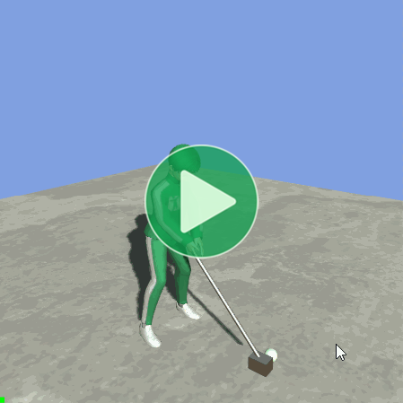

Location: Samples/05 Events/01 Golf Events
Recommended After: Transitions
Learning Outcomes: in this sample you will learn:
How to run a function at a specific time during an animation.
How adjust the end time of an animation to create a smoother transition.
Summary
This sample demonstrates how you can use an Animancer Event to make a character hit a ball at the appropriate time during a GolfSwing animation and adjust its end time to create a smoother transition back to the Ready stance.

- Animancer supports Unity's inbuilt Animation Events and also has its own Animancer Events system which is often more convenient to use. The Events page explains the differences between them.
- Animancer Events can be configured in the Inspector or in code.
- In most cases, the recommended workflow is to define event times and names in the Inspector then use those names in code to set their callbacks.This allows non-programmers to visually preview and tweak the time while keeping the actual logic inside your code as much as possible.
- You can adjust the end time of an animation to give a smoother transition into the next animation.
Overview
The general code structure is similar to the Transitions sample with some extra components on the Ball:

The GolfBall script is responsible for applying force to the ball's Rigidbody and returning to its starting location after being hit away. It won't be explained further because its implementation has nothing to do with Animancer.
using Animancer;
using Animancer.Units;
using UnityEngine;
public class GolfBall : MonoBehaviour
{
[SerializeField] private Rigidbody _Rigidbody;
[SerializeField] private Vector3 _HitVelocity = new(0, 10, 10);
[SerializeField, Meters] private float _ReturnHeight = -10;
private Vector3 _StartPosition;
public bool ReadyToHit
=> _Rigidbody.isKinematic;
protected virtual void Awake()
{
_Rigidbody.isKinematic = true;
_StartPosition = _Rigidbody.position;
}
protected virtual void FixedUpdate()
{
if (_Rigidbody.position.y < _ReturnHeight)
{
_Rigidbody.isKinematic = true;
_Rigidbody.position = _StartPosition;
}
}
public void Hit()
{
_Rigidbody.isKinematic = false;
#if UNITY_6000_0_OR_NEWER
_Rigidbody.linearVelocity = _HitVelocity;
#else
_Rigidbody.velocity = _HitVelocity;
#endif
}
}
The GolfCharacter script controls the character's animations and assigns the Hit method from the GolfBall as the callback for the event named Hit:
using Animancer;
using UnityEngine;
public class GolfCharacter : MonoBehaviour
{
private static readonly StringReference HitEventName = "Hit";
[SerializeField] private AnimancerComponent _Animancer;
[SerializeField] private ClipTransition _Ready;
[SerializeField, EventNames] private ClipTransition _Swing;
[SerializeField] private GolfBall _Ball;
protected virtual void Awake()
{
_Swing.Events.SetCallback(HitEventName, _Ball.Hit);
_Swing.Events.OnEnd = PlayReady;
_Animancer.Play(_Ready);
}
protected virtual void Update()
{
if (_Ball.ReadyToHit && SampleInput.LeftMouseDown)
_Animancer.Play(_Swing);
}
private void PlayReady()
{
_Animancer.Play(_Ready);
}
}
Fields
| Code | Inspector |
|---|---|
The fields are simple Transitions and a reference to the |
Event Time
As shown in the above image, an event has been added to the _Swing transition in the Inspector. This is much easier than doing it in code because it allows you to preview the animation while adjusting the event to get it right where you want it.
- Events can be added by double clicking in the timeline or using the button on the right side.
- Events can be removed by selecting them and pressing the Delete key or using the button on the right side.
Event Callback
We could set the Callback in the Inspector by selecting UnityEvent from the dropdown (UltEvents are also supported).
This is generally not recommended though, because it has several drawbacks:
- If the event is inside a Transition Asset it won't be able to reference anything in the scene because Unity doesn't allow assets to store serialized references to scene objects.
- It takes some logic out of your scripts and defines it in the scene/prefab/asset instead. This can make it harder to understand the behaviour of your systems and debug issues that arise because the flow of logic goes in and out of your scripts and other assets instead of being entirely defined within the scripts.
So instead of configuring the Callback in the Inspector, this sample demonstrates how to assign it in code. The GolfCharacter script doesn't care when the event occurs, but it knows that there needs to be an event to call GolfBall.Hit at some point.
Event Name
Since we "know" there's only one event (excluding the End Event), the script could just set its callback using index 0:
_Swing.Events.SetCallback(0, _Ball.Hit);
But that means the Inspector won't give any indication of what the event does or is for, it would just be a marker at a time without any clear purpose. That might not be a problem if you're working on your own and only have a few events, but would be unhelpful in more complex situations.
That's why events have a Name field where a String Asset can be assigned. In this case, the event is called Hit.
Once the event has a name, the script can set the callback of whichever event has that name:
_Swing.Events.SetCallback("Hit", _Ball.Hit);
If the animation doesn't have an event with that name, it will throw an exception because that usually means the transition's events haven't been set up as needed for the script to work properly. If you want the event to be optional, you could use Events.IndexOf then use that index to set the callback.
Event Names Attribute
Using a Magic String in code for the event name isn't great because there is no indication in the Inspector of which event name the script is expecting.
That could be solved by giving the script another field to reference the same String Asset assigned to the event. That's often the ideal approach if you want to maximise flexibility, but it will then take a bit more effort to manage in the Inspector because you have to assign the same String Asset in both places.
[SerializeField] private StringAsset _HitEventName;
...
_Swing.Events.SetCallback(_HitEventName, _Ball.Hit);
The approach demonstrated by this sample is to use an Event Names Attribute to let the script define which names it expects the transition to have so the Inspector can suggest those names.
- Make a
staticString Reference field containing the name:
private static readonly StringReference HitEventName = "Hit";
- Set the callback using that name:
_Swing.Events.SetCallback(HitEventName, _Ball.Hit);
- Put an
[EventNames]attribute on the transition field:
[SerializeField, EventNames] private ClipTransition _Swing;
- That tells it to use any
staticfields containingStringReferences orstrings inside this class so it sees theHitEventNameautomatically. There are several other ways to use the attribute which are explained on theEventNamesAttributeAPI page.
| Expected Name | Unexpected Name |
|---|---|
| That attribute makes the Inspector show an icon with a tooltip listing the expected names. | And if an unexpected name is assigned, it changes to a warning icon. |
End Event
The End Event returns the character to the Ready animation:
protected virtual void Awake()
{
...
_Swing.Events.OnEnd = PlayReady;
}
private void PlayReady()
{
_Animancer.Play(_Ready);
}
The script defines what will happen, but it doesn't care when that event actually occurs.
Early End
Watch the path of the golf club after the Swing as it returns to Ready.
| Standard End | Early End |
|---|---|
| If we wait for the actual end of the Swing animation before we start transitioning to Ready, we can observe an unnatural change in the motion when the transition begins. The swing animation goes up to the top of the arc and begins to relax, then when that animation actually finishes it starts transitioning from that pose to Ready which is a notably different motion for no apparent reason. | Setting the |
Conclusion
Setting up event times in the Inspector and callbacks in code is often more effective than doing it all in the Inspector because it achieves better separation of concerns:
- Visual data (i.e. the event times) should be configured in the Unity Editor so it can be easily tweaked and previewed without needing a programmer to modify the code, wait for it to recompile, and go through your application until you get to the right place to test it.
- Logic (i.e. the event callbacks) should be defined in code so it can be properly organized and maintained without needing to hunt back and forth between the code and the Unity Editor data to figure out how things work.
What Next?
| Sample | Topic |
|---|---|
| Footstep Events | Using events with parameters and binding their callbacks without directly touching the transition. |